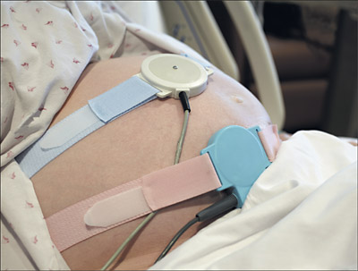
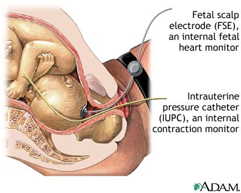
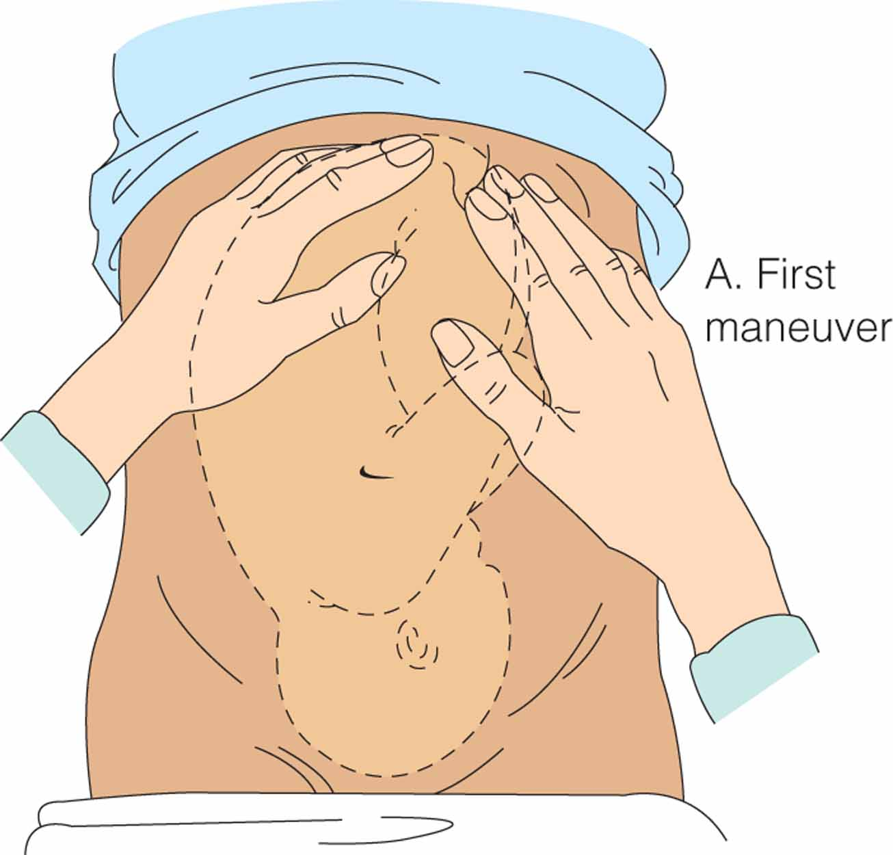
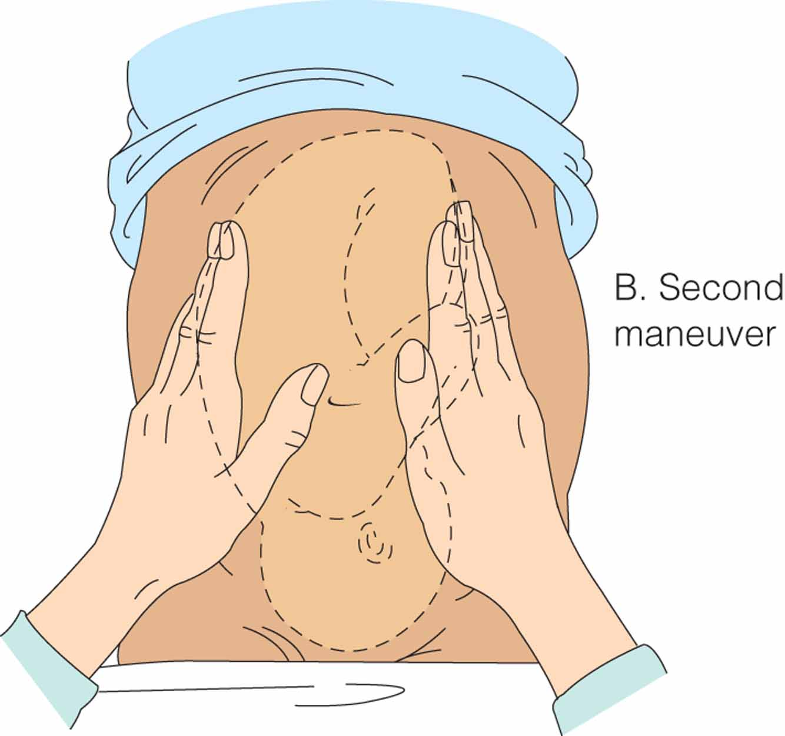
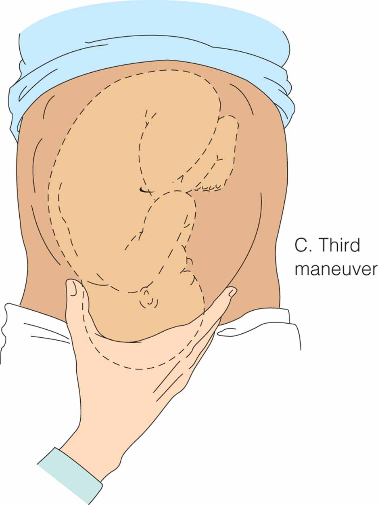
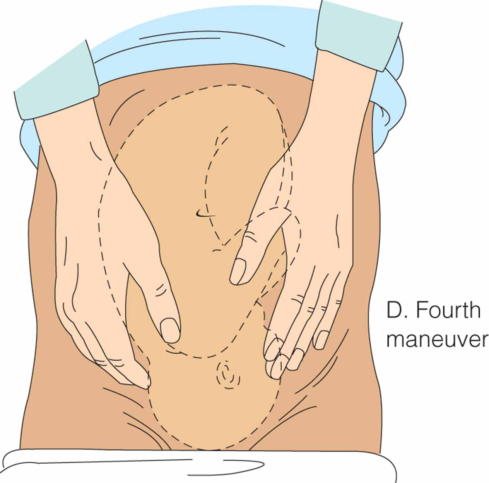
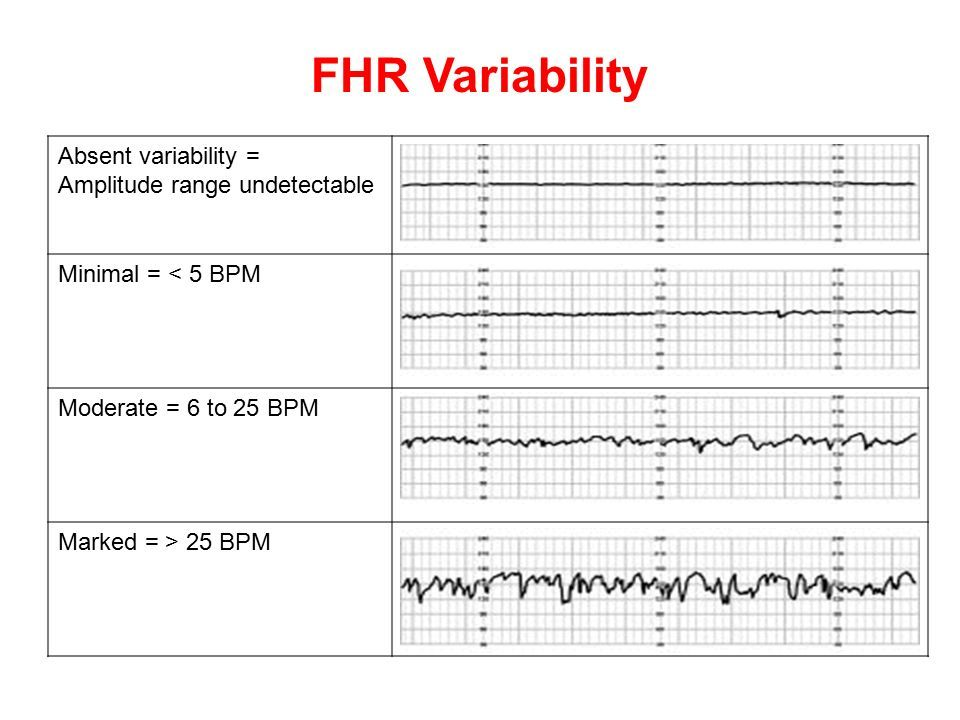
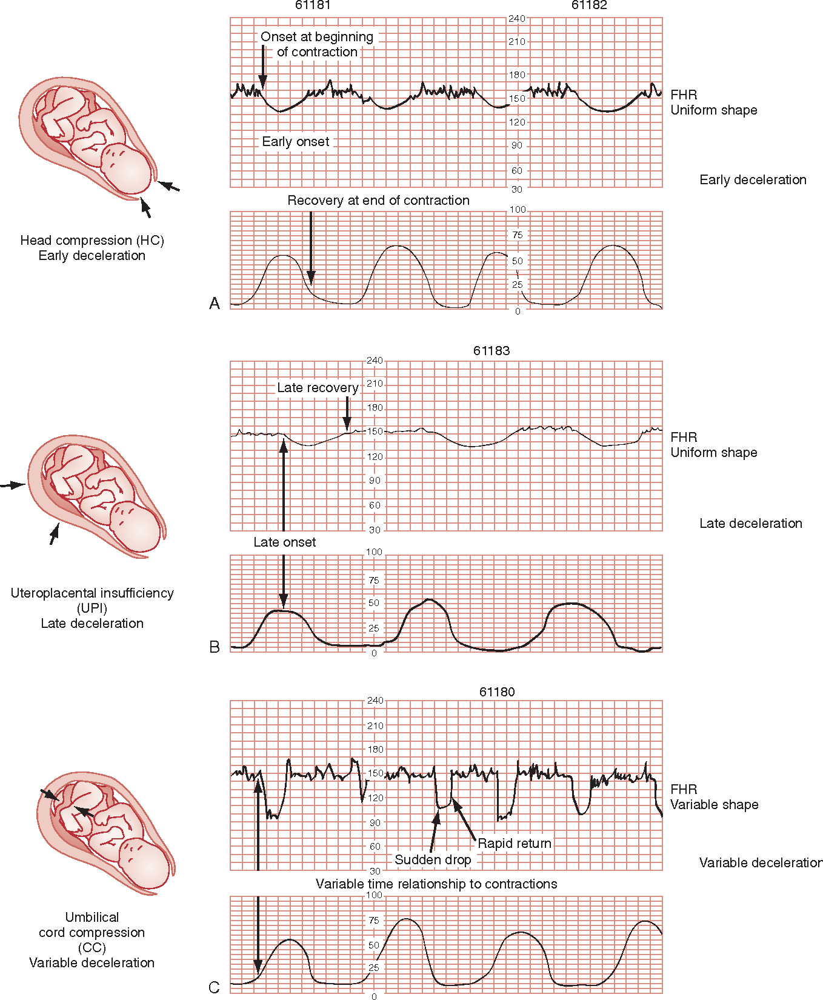
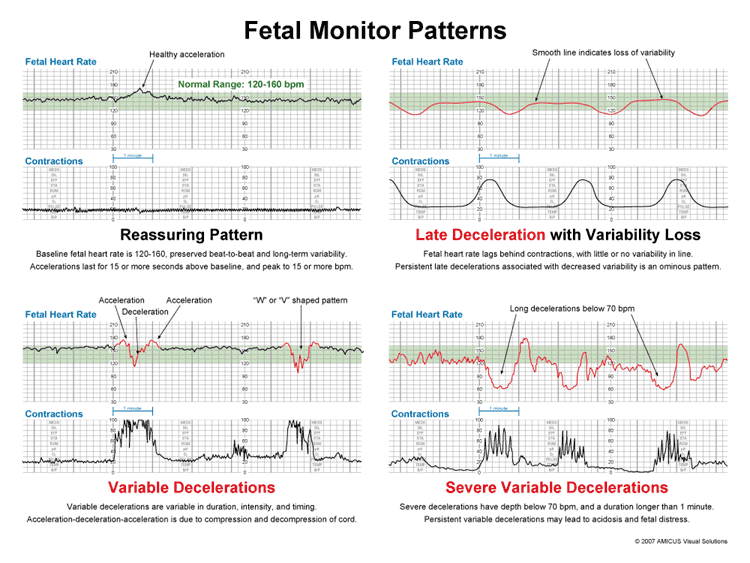

Week 3 · Topic 2
Intrapartum Care II — Admission, Monitoring & Nursing Care
Admission
Greet the patient and start to establish rapport — a friendly face goes a long way when someone is nervous or hurting. Orient her to the room, facilities, and equipment. Informed consent is important, especially if she is laboring or you suspect she may need to deliver. Notify your provider that your patient has arrived.
What the Admission Assessment Must Answer
| Question | Why / What to Look For |
|---|---|
| Is she in labor? | And is she term or preterm? |
| Is she or the fetus high risk? | Hypertensive disorder, bleeding, diabetes, obesity, a previously large infant, excessive weight gain |
| Ambulation or bed rest? | Which should be encouraged for this patient |
| How often to monitor? | Does she need continuous fetal monitoring, or is intermittent enough? |
| What does she want? | Does she have a birth plan? Who is her social support? |
The Birth Plan
A birth plan is not "a kiss of death" — it's a great idea. It's part of the patient being empowered to help make decisions about her own care. It should cover: the environment she's chosen for labor; her pain management preferences (epidural, IV pain medicine, or completely natural); who to contact in an emergency; whether she's okay with a C-section or other medical interventions; and her newborn care options. Clients should also realize the ultimate goal is a healthy mom and a healthy baby.
Physical Assessment & History
Assess & ask
- Vital signs; her weight (ask, and weigh her if she doesn't know)
- Drug allergies
- Medical, surgical, and psychiatric history; social and cultural history
- Obstetric history — how many pregnancies, how many deliveries, problems with previous pregnancies or this one
- Is the baby moving? Is the baby active?
- Current medications; hydration and nutritional status
Admission lab work
- Blood type
- CBC
- Type and screen
- Group B Strep (GBS) status — positive or negative
- Rubella status — immune, non-immune, or equivocal
- Urine dip and/or a urine drug screen
Group B Strep Prophylaxis
Fetal & Uterine Monitoring Devices
| Device | What It Measures | Advantages | Disadvantages |
|---|---|---|---|
| External ultrasound fetal heart rate · external |
Continuous graph of the fetal heart rate — baseline, variability, and changes | Non-invasive; does not require ruptured membranes; nurses can place it | Interference if mom or baby is moving a lot — hard to keep a continuous tracing. Maternal size (adipose tissue) can cause a weak signal or sketchy tracing. |
| External tocodynamometer contractions · external |
Contraction frequency and duration — plus a permanent continuous recording of uterine activity | Non-invasive and easy for the nurse to place; can be used before or after rupture of membranes; can be used intermittently | Does NOT give contraction intensity — the nurse must palpate the abdomen to determine that, and compare her subjective findings to the monitor. The belt is uncomfortable, needs frequent readjustment, and makes mom feel she can't move around. |
| Fetal scalp electrode (FSE) fetal heart rate · internal |
Continuous, clear fetal heart tracing with better information about variability | Keeps tracing even when mom moves, stands, or is on hands and knees — no readjusting. Nurses can place it if trained. | Invasive — membranes must be ruptured. Risk of infection or injury to the fetus. Place it on a firm part of the skull — avoid the sutures and fontanelles. |
| Intrauterine pressure catheter (IUPC) contractions · internal |
Frequency, duration, resting tone — and it calculates INTENSITY for you | Used when the external toco is not sufficient to pick up contractions or uterine activity (often related to maternal size). Lets you calculate Montevideo units. | Placed by the PROVIDER (not the nurse). Increased risk of infection and injury — you could perforate the uterus or the placenta. Be careful with an active infection or a low-lying placenta. Use only if indicated. |


Uterine Activity — the Numbers
| Parameter | What You Want | Why |
|---|---|---|
| Montevideo units | Greater than 200 in a 10-minute period | That's what defines adequate labor |
| MVU ceiling | Do not exceed 300 | Means the uterus has too much pressure / she is contracting too much |
| Resting tone | Less than 25 mm Hg | The uterus must relax between contractions |
| Duration | Less than 120 seconds per contraction | A duration greater than 2 minutes is lasting too long |
| Frequency | No more than 5 contractions in 10 minutes — ideally every 2–3 minutes | Any more and the uterus never gets to rest |
| Uterine tachysystole | 6 or more contractions in a 10-minute period | This is the definition — too many contractions |
Rupture of Membranes
SROM = spontaneous rupture of membranes. AROM = artificial rupture of membranes.
Tests for Rupture of Membranes
| Test | Who Does It | How to Read It |
|---|---|---|
| Nitrazine paper | The nurse — non-invasive, right at the bedside | Touch the pH paper to the discharge. Amniotic fluid is alkaline, so it turns the paper a deep blue = POSITIVE. If it stays yellow, it is probably not amniotic fluid. |
| Fern test | The provider | A sample of vaginal discharge is looked at under the microscope. A crystallized, fern-like formation = a positive fern test = her water is broken. |
| AmniSure | The provider | Swab and swirl the vaginal discharge ~1 min, transfer to solvent ~1 min, then insert the test strip and read at 5 minutes. Two lines = positive (even a very faint broken second line counts). Control line only = negative. No control line = invalid. If you wait longer than 15 minutes you cannot interpret it — you have to repeat the whole test. |
Vaginal Exam & Leopold's Maneuvers
The bimanual exam (two fingers, sterile glove) checks the cervix and the presenting part. You want to determine: is the baby head-first, breech, or transverse? Is the cervix posterior, mid-position, or anterior? Dilation (0–10 cm)? Effacement (0–100%)? Station (−5 to +5, with engagement at zero at the ischial spines)? If the exam still can't determine the presentation, the provider can do a quick bedside ultrasound.
Leopold's Maneuvers — How the Nurse Determines Position Manually
| Maneuver | What You're Feeling For | How to Interpret |
|---|---|---|
| 1st | Feel the top of the fundus — head or bottom? | Hard and round = probably the head. Soft or hard to feel = probably the bottom. |
| 2nd | Hands on the sides — arms/legs or back? | Bumpy = arms or legs. Smooth = the baby's back. |
| 3rd | Palpate over the symphysis pubis — the presenting part | Hard = the head. Soft or hard to feel = the bottom. |
| 4th | Feel the outline of the fetus with your palms | The higher the head is in the pelvis, the more of the baby you'll feel. |




Reading the Fetal Heart Tracing
| Term | Definition |
|---|---|
| Episodic | NOT associated with a contraction |
| Periodic | IS associated with / happens with a contraction |
| Baseline | Normal fetal heart rate baseline is 110–160 bpm. You must observe the heart rate for at least 10 minutes to determine it. |
| Accelerations | ≥32 weeks: at least 15 bpm above baseline for at least 15 seconds. <32 weeks: 10 bpm above baseline for 10 seconds. (Same criteria as the non-stress test.) |
Variability — The Single Best Indicator
| Category | Fluctuation | What It May Mean |
|---|---|---|
| Absent | Undetectable — looks like a straight line | The baby may be acidotic / in distress |
| Minimal | Less than 5 bpm | May be a fetal sleep cycle, pain medication, or something relaxing (e.g. she's been on magnesium sulfate a while) |
| Moderate | 6–25 bpm | This is where you want it. |
| Marked | Greater than 25 bpm | Above the desired range |

Decelerations — VEAL CHOP
Variable → Cord compression
Early → Head compression
Acceleration → Okay
Late → Placental insufficiency
| Pattern (VEAL) | Cause (CHOP) | What It Looks Like | Why It Happens |
|---|---|---|---|
| Variable | Cord compression | Abrupt onset — less than 30 seconds from baseline to nadir — and less than 2 minutes long. Can happen with or without contractions, any time the cord is pinched. | Think: what position change can I do to take pressure off the cord? Severe variables dropping below 70 bpm and happening with every contraction mean the baby isn't perfusing well. |
| Early | Head compression | Mirrors the contraction — you could flip it upside down and it would look the same. Slow and gradual: >30 seconds from onset to nadir. The nadir (lowest point) is at the peak of the contraction, and it returns to baseline as the contraction eases. | As the uterus tightens it presses on the baby's head; stretch receptors sense the pressure and slow the heart rate. An inverse relationship — and it's benign. |
| Acceleration | Okay | ≥32 weeks: at least 15 bpm above baseline for at least 15 seconds. <32 weeks: 10 bpm above baseline for 10 seconds. | A reassuring sign of fetal well-being — the "O" is for Okay; no intervention needed. |
| Late | Uteroplacental insufficiency — a perfusion problem | The heart rate starts dropping around the peak of the contraction, and has NOT returned to baseline by the time the contraction ends. | Find the perfusion problem: is her BP too high (vasoconstriction reducing placental flow)? Too low (e.g. she just got an epidural)? Is she bleeding (a volume problem)? Late decels are ALWAYS a problem. |
| Prolonged | Most often umbilical cord prolapse (the cord gets compressed and stays compressed) | ≥2 minutes but less than 10 minutes. (At 10 minutes it would be considered a new baseline.) | It may start out looking like a variable or a late, but the heart rate is still not back up by 2 minutes and is very slow to return. Determine the cause. |

Two Patterns You Must Recognize Immediately
| Pattern | Definition | First Thing to Think |
|---|---|---|
| Fetal bradycardia | Baseline less than 110 bpm for at least 10 minutes | Big culprits: prolapsed cord, or a placental abruption with a lot of bleeding. Find the cause so you can get the heart rate back to a safe range. |
| Fetal tachycardia | Baseline greater than 160 bpm for at least 10 minutes | CHECK THE MATERNAL TEMPERATURE FIRST. An elevated maternal temp is often reflected in a tachycardic baby. Also rule out infection and consider medications. |
Reassuring vs. Non-Reassuring — and the Three Categories
Reassuring
- A good baseline (110–160).
- Good (moderate) variability.
- No repetitive decelerations — occasional decels are okay if the baseline and variability are good. A tracing with a few variables plus an acceleration and good variability is still reassuring.
Non-reassuring — the baby is in distress
- Persistent and severe variables
- Late decelerations of ANY magnitude
- Prolonged decelerations
- Absent variability
- Sinusoidal pattern
- Severe bradycardia or prolonged tachycardia
| Category | Meaning | Findings |
|---|---|---|
| Category I | Normal | Baseline 110–160, moderate variability, no late or variable decelerations. Early decels are okay — it's still a Category I tracing. |
| Category II | Indeterminate | Minimal or marked variability; no accelerations; prolonged decels, recurrent variables, or recurrent lates with moderate variability |
| Category III | Abnormal | Sinusoidal pattern, or absent variability along with recurrent lates, recurrent variables, or bradycardia. A Category III baby needs to be delivered. |

Interventions for a Non-Reassuring Tracing
| Intervention | Details |
|---|---|
| Position change | Her favorite first move — it works very often, it's non-invasive, and you can do it yourself. The left side particularly helps increase blood flow, but right or left both work. |
| Turn off the oxytocin | If oxytocin is running and you see late decelerations, turn it off. You can always restart it later with a provider order. |
| IV fluid bolus | A bolus of LR |
| Oxygen | 10 L via tight non-rebreather face mask |
| Lower the head of the bed | Helps increase perfusion |
| Notify the provider & document | Any time you see something non-reassuring |
| Tocolytic | If she's contracting too much, too frequently, or too long — terbutaline SUB-Q gives a very quick effect to decrease uterine activity — but check the mother's heart rate first and hold it if she is 120 bpm or higher (terbutaline raises the heart rate and makes her feel jittery) |
| Prepare for immediate delivery | If you can't fix the problem. If vaginal delivery is near, the provider may use forceps or vacuum; if not, she needs a cesarean birth. |
Nursing Care by Stage
| Stage / Phase | Nursing Care |
|---|---|
| 1st stage — Latent | Anticipatory guidance, information, and support. Encourage ambulation. Offer ice chips/fluids per protocol. Vital signs at least every hour. Temperature every 4 hours — but at least every 2 hours (or more often) if her water is broken. Fetal heart tones every 30–60 min (depending on risk status and whether the tracing is reactive). |
| 1st stage — Active | Palpate contractions every 15–30 min (or continuous monitoring). Vaginal exams for dilation, effacement, station, and position. Encourage her to void every 1–2 hours to keep the bladder empty. Often start an IV (she isn't eating/drinking, and it's a route for medications). Auscultate FHR every 15–30 min. Vital signs every 15–30 min. When the water ruptures, assess color, odor, amount of fluid, AND the fetal heart rate. Change her position and pads often. |
| 1st stage — Transition | Stay present — especially if she's going natural. Palpate contractions every 15 min (or continuous). Vaginal exams to assess progress so you know when it's time to push and to have the provider present. FHR every 15–30 min. Check on her at least every 15–30 min. Assist with breathing, and help keep her from pushing until she is fully dilated. |
| 2nd stage — Pushing | Sterile vaginal exams to confirm the baby is descending well and in good position. FHR every 5–15 min (or continuous). Maternal vital signs every 30 min (more often if high risk). Provide support and information about progress, help her push, and assist the provider with the birth. |
| 3rd stage | Newborn care: stimulation and warmth, vital signs and Apgar scores, newborn identification, physical assessment, and skin-to-skin kangaroo care. Maternal care: monitor for delivery of the placenta, document the time, check that the placenta looks intact, and start the oxytocin once the placenta is out. |
| 4th stage | BP, pulse, and respirations every 15 min for the first hour; temperature hourly. Oxytocin 20 units (or per unit protocol) in her IV fluids to contract the uterus and prevent postpartum hemorrhage. Palpate the fundus every 15 min for the first hour — it should be firm and midline. Assess vaginal bleeding and the perineum, provide perineal care, assess the need to void, encourage kangaroo care, and help her with feeding. Don't forget the instrument and sponge count. |
Comfort Measures
First and second stage
- Clear fluids and ice chips; ambulation (especially in the latent phase)
- Hydrotherapy — a warm tub or shower; some rooms even allow delivery in the tub
- Perineal care; helping her relax between contractions; distraction so she can cope
- Effleurage — massage with circular stroking movements using the palm of your hand
- Firm pressure on the back or sacrum — especially good for back labor
- Visualization; controlled/patterned breathing (it helps if the nurse or support person breathes along with her); position changes
- Second stage adds: a cool cloth, rest between contractions, sips of fluid/ice chips, reassurance that she's doing a good job, and help into a pushing position (which may mean holding up her legs)
Positions & gravity
- Gravity brings the baby down and relieves pelvic pressure — a birthing ball, a chair at the bedside, or hands and knees all help the baby descend and rotate.
- Without an epidural she can kneel, sit, squat, or stand.
- The peanut ball is for epidural patients — they can't get out of bed onto a birthing ball. It opens up the pelvis to promote optimal fetal rotation, and is especially good if the baby is occiput posterior, encouraging rotation to occiput anterior.
- There is no single way to push: stirrups/lithotomy, sitting up in bed, a squat bar, or side-lying.
Birth & the Immediate Recovery Period
Signs of imminent birth
- The perineum starts bulging or the head is crowning
- An uncontrollable urge to bear down
- Increased bloody show
As the head comes out, the provider puts pressure and support on the perineal area. Once the head is delivered, suction the mouth and nose, then deliver the shoulders.
After delivery — comfort
- Heated blanket / warm covers
- Something to eat and drink
- An ice pack to her bottom
- Pain medication if she needs it
- Encourage her to rest — and congratulate her on a job well done
Discharge Criteria — Before Transfer to Mother-Baby / Postpartum
| Criterion | Requirement |
|---|---|
| Vital signs | Stable |
| Bleeding | Stable |
| Bladder | Empty |
| Fundus | Firm |
| Anesthesia | If she had it, she should be reporting returning sensation |
| Baby | Admitted with her to the postpartum unit (or to the nursery if needed) — confirm the right baby with the right family |